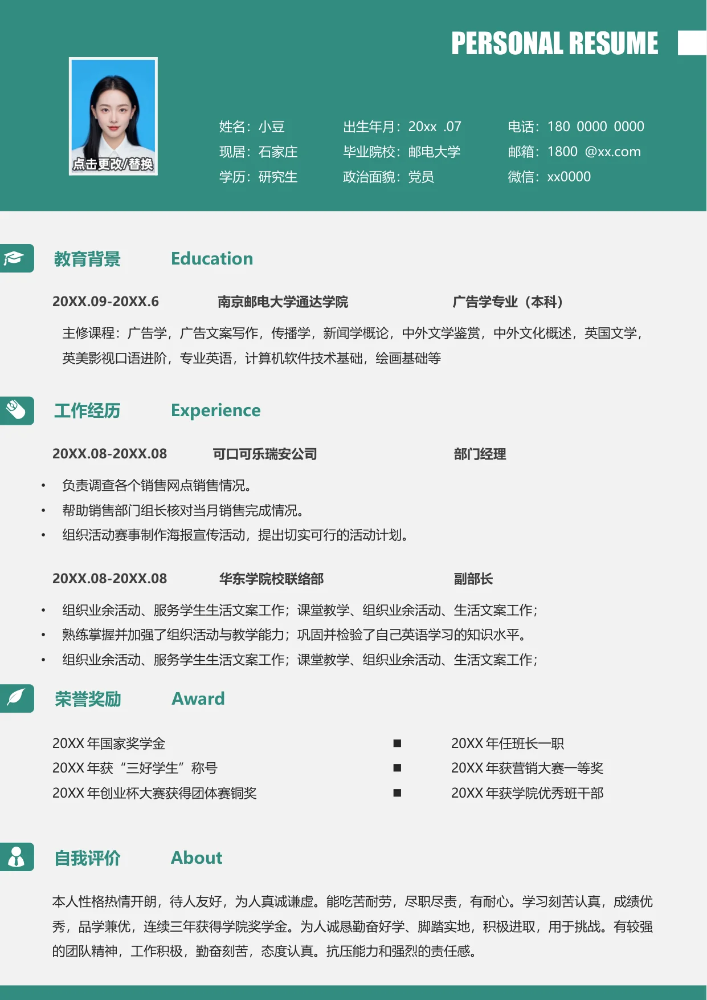

20XX.09-20XX.6 南京邮电大学通达学院 广告学专业（本科）
主修课程：广告学，广告文案写作，传播学，新闻学概论，中外文学鉴赏，中外文化概述，英国文学，
英美影视口语进阶，专业英语，计算机软件技术基础，绘画基础等
20XX.08-20XX.08 可口可乐瑞安公司 部门经理
•
负责调查各个销售网点销售情况。
•
帮助销售部门组长核对当月销售完成情况。
•
组织活动赛事制作海报宣传活动，提出切实可行的活动计划。
20XX.08-20XX.08 华东学院校联络部 副部长
•
组织业余活动、服务学生生活文案工作；课堂教学、组织业余活动、生活文案工作；
•
熟练掌握并加强了组织活动与教学能力；巩固并检验了自己英语学习的知识水平。
•
组织业余活动、服务学生生活文案工作；课堂教学、组织业余活动、生活文案工作；
本人性格热情开朗，待人友好，为人真诚谦虚。能吃苦耐劳，尽职尽责，有耐心。学习刻苦认真，成绩优
秀，品学兼优，连续三年获得学院奖学金。为人诚恳勤奋好学、脚踏实地，积极进取，用于挑战。有较强
的团队精神，工作积极，勤奋刻苦，态度认真。抗压能力和强烈的责任感。
教育背景 Education
工作经历 Experience
荣誉奖励 Award
自我评价 About
PERSONAL RESUME
20XX 年国家奖学金
20XX 年获“三好学生”称号
20XX 年创业杯大赛获得团体赛铜奖
20XX 年任班长一职
20XX 年获营销大赛一等奖
20XX 年获学院优秀班干部
姓名：小豆
现居：石家庄
学历：研究生
出生年月：20xx .07
毕业院校：邮电大学
政治面貌：党员
电话：180 0000 0000
邮箱：1800 @xx.com
微信：xx0000